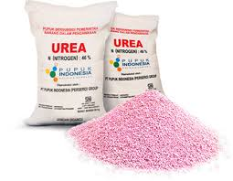
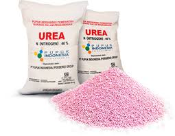

Proses Pengomposan
Penyiapan Starter
Larutan starter dibuat dengan mencampurkan cairan EM4 sebanyak 300 cc ditambah urea 2 kg kemudian ditambah air sehingga volume larutan menjadi 3 liter (3000cc), yang digunakan untuk proses pengomposan sebanyak satu kubik biomas campuran sampah daun kering dan sampah basah. Larutan starter baru digunakan setelah dibiarkan (diinkubasikan) selama 24-48 jam).
 

Penyampuran Sampah Daun Kering & Sampah Basah
Penyampuran sampah daun kering dengan sampah basah dilakukan dengan sistem kue lapis, yaitu untuk ketinggian 100cm dibuat daun kering lima lapis dan sampah basah lima lapis. Lapisan paling bawah adalah sampah daun kering kemudian lapisan sampah basah demikian seterusnya dan yang paling atas sampah basah sebagaimana terlihat dalam gambar. Ketebalan masing-masing lapisan tergantung komposisi/perbandingan yang diinginkan. Untuk perbandingan 50 persen sampah daun kering dan 50 persen sambah basah, maka tebal masing-masing lapisan adalah 10cm. Untuk perbandingan 60 persen sampah daun kering dan 40 persen sambah basah, maka tebal lapisan daun kering adalah 12cm, dan tebal lapisan sampah basah adalah 8cm. Dan untuk perbandingan 40 persen sampah daun kering dan 60 persen sambah basah, maka tebal lapisan daun kering adalah 8cm, dan tebal lapisan sampah basah adalah 12cm. Pemilihan proporsi sampah daun kering dengan sampah basah tergantung pada kondisi sampah basahnya, dipilih proporsi yang tepat agar kondisi campuran biomas tetap lembab namun jangan sampai terlalu banyak mengeluarkan air lindi. Bila sampah basah berupa bahan yang kandungan airnya tidak terlalu banyak maka perbandingannya bisa 50 persen sampah daun kering dan 50 persen sampah basah. Bila sampah basah berupa bahan yang kandungan airnya banyak misalnya sampah basah buah-buahan, maka perbandingannya 60 persen sampah daun kering dan 40 persen sampah basah
Perawatan Selama Masa Inkubasi
Biomas campuran sampah daun kering dengan sampah basah yang sudah di dalam kantong glangsing ditempatkan pada ruang yang tidak terkena hujan dan tidak terkena sinar matahari langsung. Sekali waktu dicek dengan membuka kantong glangsing dan memasukan tangan kita sedalam 25-30 cm, untuk memastikan bahwa campuran biomas temperaturnya naik sebagai indikator adanya aktivitas mikrobia, dan kondisi biomas lembab (tidak kering).
Pemanenan Kompos
Pemanenan kompos dilakukan bila kompos sudah jadi dengan tanda-tanda temperatur sudah hampir sama dengan suhu udara disekitarnya, warna sudan menjadi hitam atau kehitaman, tidak berbau, strukturnya sudah remah, yaitu bila diremas sudah hancur. Kompos yang sudah jadi siap untuk digunakan langsung dicamprkan dengan media tanam atau dibungkus untuk sementara disimpan sebelum digunakan; Pemanenan dilakukan dengan cara:
- Biomas kompos dituang dari glangsing, dilakukan secara bertahap (sedikit demi sedikit);
- Biomas diaduk agar tercampur merata antara biomas daun kering dengan sampah basah
- Biomas kompos dimasukan dalam kantong, bisa kantong planstik warna gelap atau glangsing dengan ukuran sesuai selera, bisa menggunakan ukuran berat 5 kg, 10 kg atau 25 kg.
- Biomas kompos disimpan ditempat yang tidak terkena sinar matahari langsung dan tidak kena hujan, agar kelembabannya terjaga namun tidak basah dan mengalami pelindian